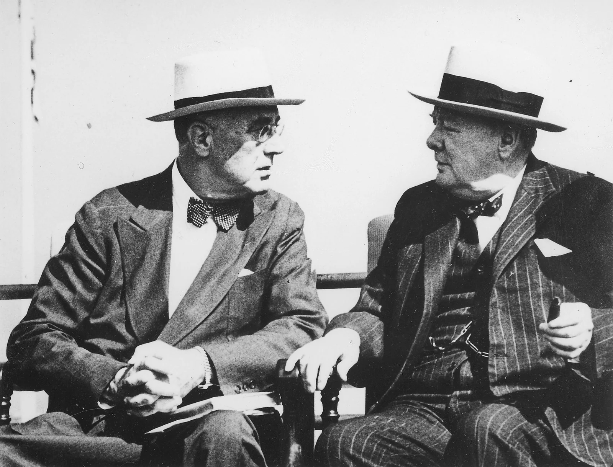
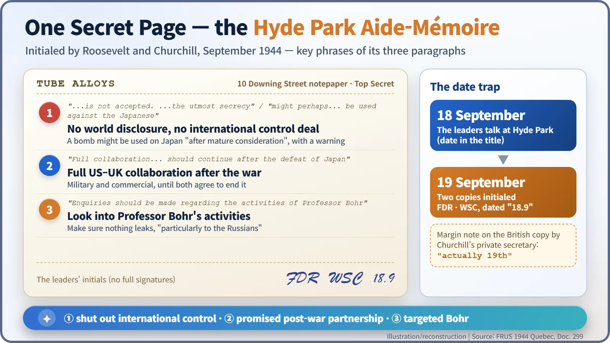
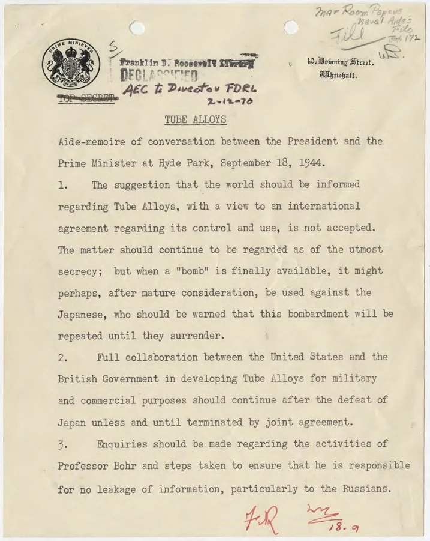
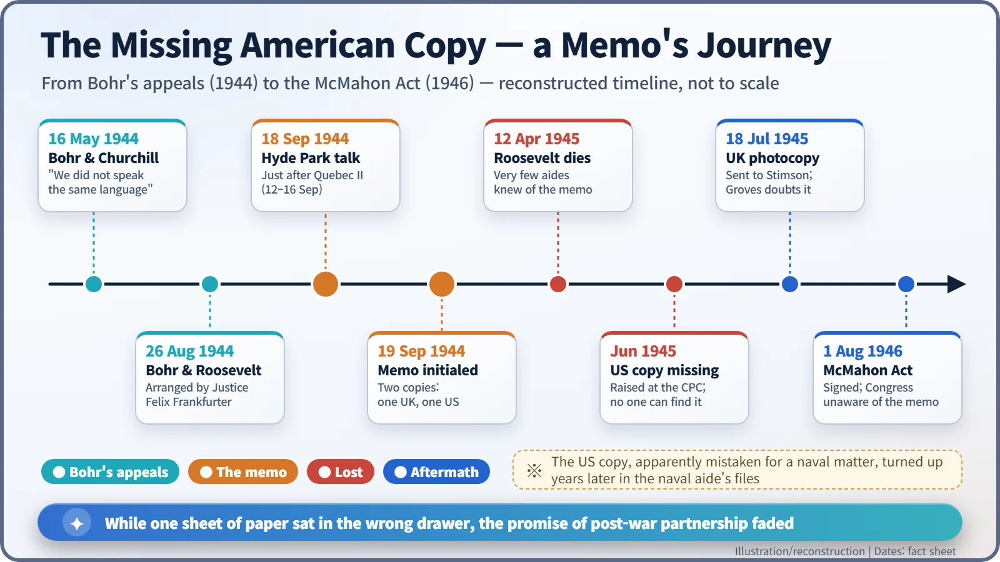

Nuclear History · 100
One Page in the Wrong Drawer — The Hyde Park Aide-Mémoire (1944)
A one-page memo initialed at Roosevelt's home closed the door on international control, then vanished from the American files.
On 18 September 1944, at Roosevelt's home in Hyde Park, New York, the President and Winston Churchill agreed three things about the atomic bomb: no international control, possible use against Japan and full Anglo-American collaboration after the war, plus inquiries into the physicist Niels Bohr. They initialed the one-page memo the next day. Then the American copy went missing.
A document nobody could find
June 1945, Washington. At a meeting of the Combined Policy Committee, the body that steered Anglo-American atomic cooperation, the British representative, Field Marshal Sir Henry Maitland Wilson, brought up a document. The previous autumn President Franklin D. Roosevelt and Prime Minister Winston Churchill had put their initials to it. The Americans around the table looked blank. The copy the United States was supposed to hold could not be found anywhere, and the man who had initialed it, Roosevelt, had died on 12 April. A single sheet of paper that helped shape the future of the atomic bomb had simply vanished into the files. That sheet was the Hyde Park Aide-Mémoire. [3]
From Quebec to Hyde Park
A year earlier, in August 1943, the two leaders had signed the Quebec Agreement, folding Britain's bomb project, code-named Tube Alloys, into the American Manhattan Project.
From 12 to 16 September 1944 they met again at the Second Quebec Conference. When it ended, Churchill travelled on to Roosevelt's family home at Hyde Park, New York, in the Hudson Valley. There, on 18 September, the two men talked about the bomb. [1] [3]

The physicist who knocked on the door
They had a particular reason to settle the matter. The Danish physicist Niels Bohr (1885–1962) had escaped occupied Denmark in 1943 and joined the Anglo-American effort as an adviser. He was convinced that unless the Soviet Union was told about the bomb, and international control was discussed before the weapon existed, the war would be followed by a ruinous arms race.
Bohr met Churchill on 16 May 1944, and the conversation went badly. "We did not speak the same language," Bohr later recalled. On 26 August, through Supreme Court Justice Felix Frankfurter, he saw Roosevelt. But a memorandum written by the science administrator Vannevar Bush on 22 September shows that Roosevelt was "very much disturbed in regard to security", asking how far Bohr had been let into the project and whether he could be trusted. [1] [4]
Three paragraphs, three decisions
The conversation of 18 September was boiled down to three paragraphs typed on a single sheet of 10 Downing Street notepaper.
- No disclosure, possible use against Japan. "The suggestion that the world should be informed regarding Tube Alloys, with a view to an international agreement regarding its control and use, is not accepted." The matter was to remain "of the utmost secrecy"; but "when a 'bomb' is finally available, it might perhaps, after mature consideration, be used against the Japanese, who should be warned that this bombardment will be repeated until they surrender."
- Partnership after the war. "Full collaboration between the United States and the British Government in developing Tube Alloys for military and commercial purposes should continue after the defeat of Japan unless and until terminated by joint agreement."
- Professor Bohr. "Enquiries should be made regarding the activities of Professor Bohr and steps taken to ensure that he is responsible for no leakage of information, particularly to the Russians."
Germany was still very much in the war, yet the target named was Japan. Note, though, how conditional the wording is: "might perhaps, after mature consideration". The actual decision to use the bomb came the following summer, through a far more complicated process. And the man who had pleaded for international control had become the subject of inquiries himself; in the event, Bohr was never confined. [1] [2]

The 18th or the 19th?
At the foot of the page there are no full signatures, just the initials "FDR" and "WSC" and the date "18.9". On the British copy, however, Churchill's principal private secretary, John Martin, added in the margin: "actually 19th". The conversation took place on the 18th; the initials went on the next day. The memo was initialed in duplicate, one copy for each government. [1]

An atomic secret among the naval files
The trouble lay with the American copy. Around Roosevelt, only Harry Hopkins and Admiral William Leahy seem to have known of the memo, and Leahy's memory of it was hazy. When the copy could not be produced at the June 1945 meeting, the British sent a photocopy of their own original to Secretary of War Henry Stimson on 18 July 1945. Even then General Leslie Groves, head of the Manhattan Project, is said to have doubted that it was genuine. [1] [3]
The American copy surfaced only years later, in the papers of Roosevelt's naval aide, Vice Admiral Wilson Brown. It appears that someone who had no idea what "Tube Alloys" meant took it for something about naval guns or boiler tubes and filed it with naval papers. A code name chosen to sound boring had done its job a little too well. The note "Naval Aide's File" at the top right of the Roosevelt Library copy is the trace of that detour. [3]
The promise that was not kept
The consequences were real. Congress drafted the Atomic Energy Act of 1946, the McMahon Act, without knowing the memo existed; President Harry Truman signed it on 1 August 1946. The act restricted the sharing of nuclear information with other countries, and the second paragraph's promise of "full collaboration" after the war lost its force. The wartime partnership built at Quebec was replaced by a "modus vivendi" on 7 January 1948. [3]

Who would hold the new power?
The story that began with a single letter in 1939 had passed through committees, laboratories and alliance agreements, and arrived at the question of who would hold this new power. The Hyde Park Aide-Mémoire answered that question with secrecy and an exclusive partnership rather than international control. How far that choice shaped the post-war nuclear rivalry is still debated by historians.